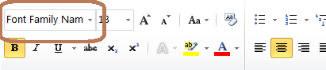

| Goal |
| Solution |
| Overview |
| Fonts default Location for Embedded BIP Engine (XMLP kernel) |
| Defining fonts in the xdo.cfg file of the Enterprise Server (Option 1) [Recommended Method] |
| Defining font directly in the RTF Template (Option 2) |
| Troubleshooting Tips |
| Known Issues |
This document describes the options to add custom fonts (for example MICR or Barcode) to reports created using Embedded BI Publisher for EnterpriseOne.
There are 2 ways to add fonts to Embedded BI Publisher reports. Fonts can be defined for embedded BIP engine (XMLP kernel) through the BI Publisher configuration file xdo.cfg a OR Fonts can be added directly to the template.
In order to build the template you can place the font in the fonts directory of the client where you are building the template, note that this will not work on the Enterprise Server. In order to test this on enterprise server, the font has to be added to the xdo.cfg or directly to the template.
Tools release prior to 9.2 (all platforms except AS400)
EnterpriseOne folder <E1Install>\system\JRE\lib\fonts
Tools release 9.2 and above (all platforms except AS400)
EnterpriseOne folder ...\E920\jdeJre\lib\fonts
If the enterprise server jde ini has a defined inProcessJVMHome path under [JDE JVM] Section, make sure to place the fonts under jre\lib\fonts folder of the used jre. Example: E:\Program Files(x86)\Java\jrockit-jdk1.6.0_45-R28.2.7-4.1.0\jre\lib\fonts
For AS400 platforms, Enterprise One does not ship JRE as it is “in-built” in the OS. But in AS400, there are more than one JVM technology with different combinations.
On V5R3 only the older “classic” JVM available.This is obsolete now.
If you are still running classic (Sun) Java, copy the font files to (version could be jdk16): /QOpenSys/qibm/ProdData/Java400/jdk15/lib/fonts
On V5R4 and V6R1, there are both “classic JVM” and the new “J9 JVM”.
On V7R1, there is only the new “J9 JVM” available.
E1's default JVM location for 8.98.3.0 and above is J9 JVM.
For 8.98.3.0 and above: /QOpenSys/QIBM/ProdData/JavaVM/jdk50/32bit/jre/lib/fonts
For 9.1 and above: /QOpenSys/QIBM/ProdData/JavaVM/jdk60/32bit/jre/lib/fonts
This default font location can be overridden by defining the new location in xdo.cfg file as explained in the below. Both default location and other custom font locations should have the same permission as the E1 delivered fonts location which is <E1Install>\system\resource\truetype.
Any OS-level user IDs that E1 utilizes (e.g., for Windows/UNIX/Linux: the user ID used to start E1 services, for AS/400: ONEWORLD, JDE, and any other separate OS-level proxy IDs used to run UBEs) should have at least "Read Permissions" on the fonts folder where the fonts are located.
Also, check that the following fonts exist on the Enterprise Server \system\JRE\<JRE Version>\lib\fonts directory. Please note that the location is different for AS400 platforms as mentioned above.
The above ALBN* fonts will help to display special characters (For example - (Hyphen)) and double byte characters to display properly in the BIP output.
In the xdo.cfg (located in EnterpriseOne folder .../system/classes) file you can set the fonts properties to add fonts and their location that are used by embedded BI Publisher engine (XMLP Kernels)
The format for the Fonts properties settings is the following:
Under the <font> section these are the available values:
font family: specify any family name for the font. If you specify "Default" for this attribute, you can define a default fallback font. The family attribute is case-insensitive.
This name should match the name which appears as font name when viewing the rtf template in MS word .

style: specify "normal" or "italic" for the font style.
weight: specify "normal" or "bold" for the font weight.
truetype path: should be an absolute path. So in Windows server you must specify the drive letter like "C:\fonts\CustomArial.ttf". Font should be placed on the server in the truetype path using FTP. On server ensure font has the correct permission ( it should have the same permission as the fonts under E1 install system\resource\truetype directory).
Within the Fonts properties settings section you can define a font, its location, its properties and a default fall back font etc :
Here is an example:
Add a default fall back font to be used if the font on the template is not found by BI Publisher Engine (XMLP Kernel): If no default font is selected BI Publisher will use Times New Roman
You can specify fonts available for a specific locale:
A locale is a combination of an ISO language and an ISO country. ISO languages are defined in ISO 639 and ISO countries are defined in ISO 3166.
The structure of the locale statement is:
ISO Language-ISO country
Locales are not case-sensitive and the ISO country can be omitted:
The <font-substitute> element defines a font substitution. This element is used to define fonts for the PDF Form Processor. This needs to be used to define the fonts for PDF templates. For example MICR font was embedded into PDF type template and associated with a RD job, Then this element is used to define fonts for the PDF Form Processor.
Re-start EnterpriseOne services after updating xdo.cfg.
Instead of defining a font in the xdo.cfg, you can define the font and its location directly in the RTF template. This is not recommended as the template need to be changed whenever any font location or property needs to be changed. Using xdo.cfg method is recommended because its one time setup compared to adding font in each and every template.
In order to define the font within the template, a custom property should be added using Microsoft (MS) Word. The Microsoft Word document properties can be accessed in following ways listed below.
Microsoft Word Properties:
Let's assume you want to use a font named 'XMLPScript' in your template, this is not available as a regular font on your server so BI Publisher requires that you tell it where the font is at runtime. Lets assume it is located in the following path 'C:\Customfonts\Fonts\' then you can set the font and its location into the template and BI Publisher will use it at runtime. In the properties dialog you would enter:
Name: xdo-font.XMLPScript.normal.normal
Type: Text
Value: truetype.C:\Customfonts\Fonts\XMLPScript.ttf
When the template is applied to the XML data on the server BI Publisher will look for the font in the 'C:\Customfonts\Fonts\' directory.

After adding the font the Properties should look like this:

Highlight the text that needs to use this font, paste the font name XMLPScript in the Font Chooser box and press enter:

If this font does not exist in the Windows client you are using to build the template you may see the following message. Accept it by pressing Yes.

Once the XML output is submitted to the Enterprise Server you will see the font available:

1. Verify the template to determine what custom fonts are being used. Open with NotePad++ and all fonts will be listed.
2. Verify how this font is defined for XMLP kernel, Whether this font is defined in template itself or it is defined in xdo.cfg
3. Verify the font file location on the enterprise server and make sure that the same path is used in xdo.cfg or in the template properties (if font is defined at template level).
4. Make sure that the folder containing the font has proper permissions to access it by XMLP kernel.
5. Make sure the font file (.TTF) name is properly mentioned in the xdo.cfg. Right-click on font, select properties and then select Details tab. This will list Font Title and that need to be XDO.CFG setting Family = Font Name.
6. If the output is sent to printer, first verify that the font is displayed properly in the PDF output.
7. Confirm that the font reference is not both embedded in the rtf template and defined in the xdo.cfg as this will cause conflict in which the font will not be displayed.
1. Correct font is not being used or displayed when the RD job is processed in Large Job Kernel. This is because the large job kernel looking for the xdo.cfg at an incorrect location on the server. Issue has been addressed in Bug 24945031 XMLP LJK LOOK INTO SYSTEM/BIN32 FOR XDO.CFG,JDELOG.PROPERTIES,XDODEBUG.CFG. Review Logging not available and custom Font Not being used when Large Batch Job is Run while it is working as expected with Small Jobs
2. Font Corrupt After Subsequent Save in MS-Word: There is a known issue with barcode font being corrupted when RTF template is re-opened and saved subsequently after the first time due to a bug in MS-Word. Follow workaround in Field with Custom Font Shows Gibberish/Garbage Characters when Template is Reopened in Microsoft Word.
3. There is a known issue starting with tools release 9.2.2.1, where the custom fonts including barcode, MICR etc. ignored when bursting is enabled in RD job settings. This issue is fixed in 9.2.2.4 and above. Review: Font Settings and Other Settings from xdo.cfg under '..system\classes' are Ignored when Bursting is Enabled.
4. Russian Language characters are not displayed in Bold while all other language characters are able to display in Bold. In the template the field is set to Arial with Bold property enabled.
To display Russian Language Characters in BOLD font, there should be a proper bold font ttf file reference. In order to display them in BOLD, you need to have a installed BOLD font and use that either in template properties or in xdo.cfg that way they can be displayed as desired in BOLD. As Arial is not a valid font in Unix/Linux, JDE ships their equivalent font albw.ttf and albwb.ttf (Albany AMT) in the system resource truetype folder. So to resolve this issue, In the template properties, add a custom rule as below:
Name: xdo-font.Arial.normal.bold
Type: Text
Value: truetype.C:\BIPFonts\albwb.ttf [In Unix, the path should be to your Unix server's system resource true type folder where this JDE shipped albwb.ttf exists]
There is a report where only one of multiple fonts inserted using any of the two methods mentioned in this document appear in the PDF output. The issue was reported in supportability bug#14246685. The original issue was reported on tools release 8.98.2.2 and it was found to not occur in tools 8.98.4.9. The one major difference between these two releases is the upgrade of the BIP core engine from 10.1.3.3.2 to 10.1.3.4.1 in 8.98.3.0. We have not been able to validate where exactly the issue was fixed. Tests with BI Publisher Desktop 10.1.3.2.1 showed multiple fonts in the PDF output as expected. For this reason this note is being kept internal. If you have more information regarding this issue, please add a comment to this document. [This section is not visible to customers.]